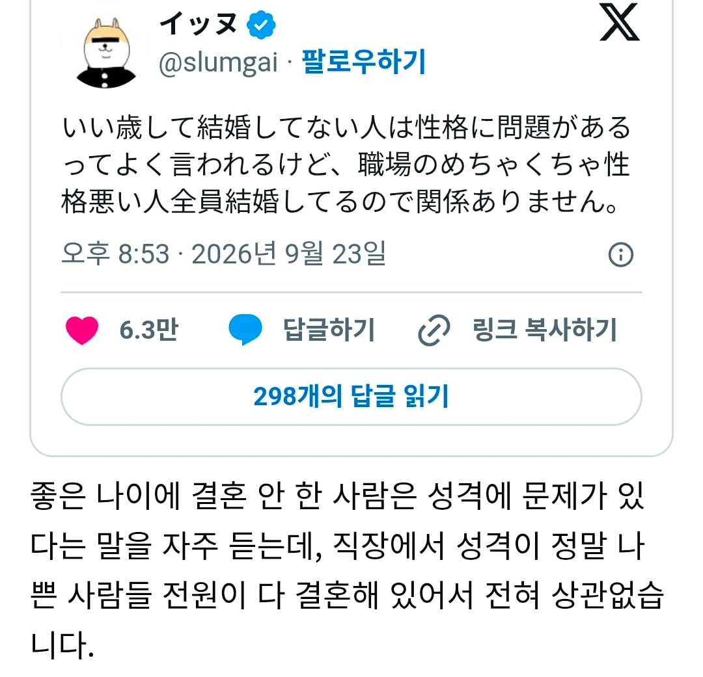

개떡같은 김실장도 결혼해서 딸만 둘이었지

개떡같은 김실장도 결혼해서 딸만 둘이었지
일단 나는 연애시장에서 숱한 환불을 경험하였기 때문에 하자가 있는 건 확실해
성격이 나쁘다와 성격에 문제있다는 서로 다른 말이다
울회사는 늦게라도 가는 형들 있긴한데 아예 안간 형들도 많아서 모르겠네ㅋㅋ
난 확실히 성격이 이상하긴 해서 결혼은 힘들 것 같긴함
일단 적정선 이상 사람들과 섞이는 것 부터가 스트레스임..
좋은쪽이든 나쁜쪽이든 남들에게 감정 쓰는게 너무 힘들어
그래서 그런지 연애도 길게 못함
서로 방치하는 성향인 사람이면 잘 맞을지도 모르겠다만 아직 그런 사람은 못 만나봄
그리고 결벽증도 살짝 있어서 특히 냄새 이런거에 많이 민감함
씌바 조용히 혼자 살겠습니다.
성격이랑 별개로 자기객관화가 전혀 안되는 경향이 있더라
김실장? 중년게이머 김실장?
그 사람 말하는거 아닐듯 아들있다 들었는데
명제 역 이 대우 안배웠나
쿨뷰티미녀가 날 안좋아하는데 어쩌라고
회사에서 부하직원한테 할줄아는게 개지랄인 상사도 지들 자식한텐 존나 천사임
진짜 모르는 거지
맞다
저런 식으로 말하는 사람도 성격에 문제가 있지
왜냐면 끼리끼리 만나기 때문ㅋㅋ
역 이 대우
결혼한 사람들 어떻게든 비혼자들 깎아내리려고하는데 왜그럴까?
김실장 같은이
와 시발 이젠 하다못해 기혼 미혼 갈라치기 덤으로 상급자 욕하기냐 ㅋㅋ
이건 근데 누구나 한번쯤은 느껴봤을걸?ㅋㅋ
노처녀 노총각들, 결혼은 했는데 애는 없고 고양이나 강아지 서너마리씩 키우는 아지매들ㅋㅋ 순리에서 어긋난 사람들은 확실히 쎄한 티가남
그 성격나쁜 새끼들도 짝이 있는데 그 나이 처먹고 결혼 못힌새끼들은 얼마나 도태된거노
성격이 아니라 얼굴에 문제가 있습니다만?
수햏이 부족하오